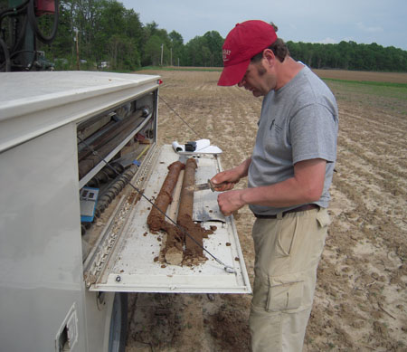
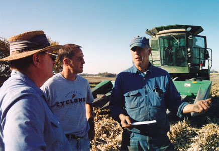
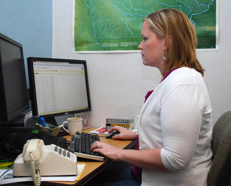

About this project
|  |  |  |
Analysis and Modeling |
This USDA funded project gathers data from 35 field sites and thousands of farmers in 9 Midwestern states, with the goal of creating a suite of practices for corn-based systems that:
- retain and enhance soil organic matter and nutrient and carbon stocks
- reduce off-field nitrogen losses that contribute to greenhouse gas emissions and water pollution
- better withstand droughts and floods
- ensure productivity under different climatic conditions
Through the Extension and Education aspects of this project, we are working with farmers, teachers and students to connect them with project analyses and promote collaborative learning.
The Issue
Corn is essential in America. The highly versatile crop is an economic powerhouse, employing millions and producing food, feed and fuel. American farmers heavily invest their time, land and money in the crop's production: In 2011, 12.3 billion bushels of corn were produced in the US alone.
Global and domestic demand for corn continues to rise. However, there is increasing uncertainty about how long-term US climate trends are impacting corn-based cropping systems and threatening agricultural investments. In response, farmers and scientists are seeking new ways to ensure continued crop productivity while also minimizing environmental impact.
More information about the project...
| 2013 Top Ten Project Accomplishments |
| 2012 Top Ten Project Accomplishments |
| Year 2 Accomplishments and Year 3 Continuation Report |
| Two-page project summary |
| Presentation slides A presentation about how to cultivate and enhance team capacity to accomplish big science. Authors include this project's director, Lois Wright Morton, Iowa State University. These slides were originally presented in Cincinnati, Ohio, October 2012, at an international meeting of three science societies: American Society of Agronomy, Crop Science of American and Soil Science Society of America. |
| Project Narrative(May 2011) |